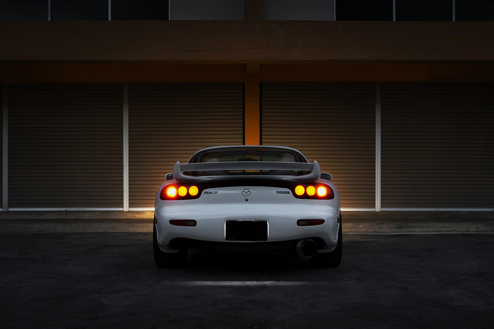

Main Page
Car Info
Nissan Skyline GTR
Toyota Supra
Nissan Silvia
Honda NSX

Mazda RX-7 FD
The RX-7 was first produced in 1992 and last produced in 2002. About 69,000 were made, they came stock with a 5 speed manual making 276 hp from a 1.3L twin turbo 2 rotor and they weighed 1.2 tones.